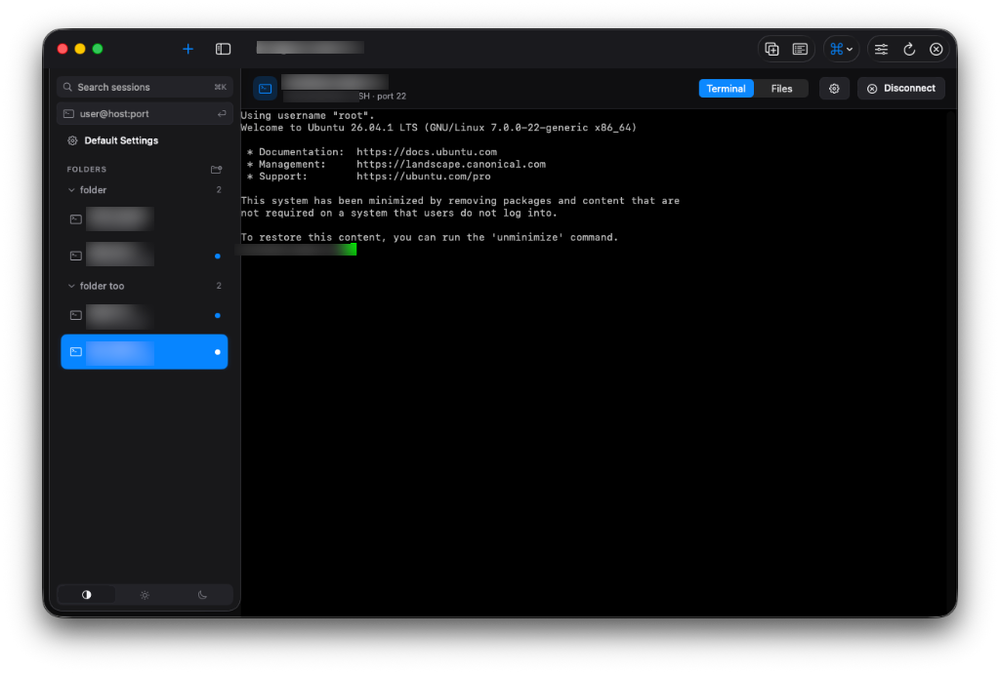
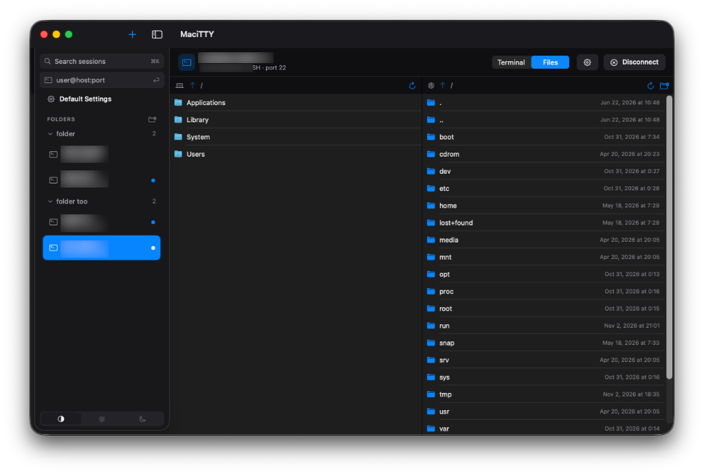
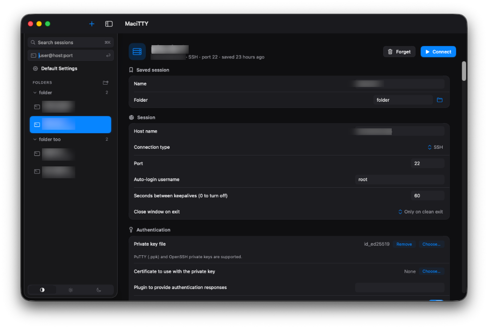

Native macOS · Free download
The SSH client
your Mac deserves.
MaciTTY is a fast, native macOS terminal client for SSH, Telnet, Rlogin and serial connections — saved sessions, keys, tunnels, file transfer and deep customization in a modern Mac app. All data stays on your Mac.
Universal build — Apple Silicon + Intel · macOS 14+ · free

See it in action
Sessions, terminal and file transfer — all in one window.


Already in your terminal
Everything below is implemented and shipping today.
Session manager
Saved sessions organized in folders, a Default Settings profile everything
inherits from, quick connect (user@host:port, ssh://…),
search — and all your live connections embedded in one tidy window.
Keys & authentication
Every way in: password, keyboard-interactive, public keys
(.ppk and OpenSSH formats), ssh-agent, certificates
and Kerberos/GSSAPI — with per-session flexibility.
Every protocol
Secure SSH connections, plus Telnet, Rlogin, Raw TCP and Serial for network gear, embedded boards and legacy systems.
Tunnels & forwarding
Local, remote and dynamic (SOCKS) port forwarding you can edit live mid-session, X11 forwarding, agent forwarding and connection sharing.
Proxies & jump hosts
Reach hosts through HTTP CONNECT, SOCKS 4/5, Telnet commands, local commands or another SSH host — with exclusion lists and DNS handled at the proxy.
Deep customization
Colours and palette editor, cursor styles, bells and Dock alerts, keyboard modes, mouse & selection behaviour, 25 legacy charsets, light/dark/system themes — tune the terminal to how you work.
Advanced SSH control
Fine-tune key exchange, cipher and host-key preference lists, rekey limits, compression and keepalives, pin manual host keys, run a remote command or connect without a shell — including workarounds for quirky servers.
Security & privacy
Save passwords and key passphrases in the macOS Keychain, unlocked with Touch ID — and lock the whole app the same way on launch, idle or sleep while sessions keep running. Host-key verification on every new server, one isolated process per session, no telemetry — files stay locked down on disk.
SFTP file browser
Browse local and remote files side by side — drag & drop transfers with progress, recursive folders, mkdir/rename/delete. Double-click a remote file to edit it in your favourite local editor; every save uploads back, with conflict detection if it changed on the server.
Imports your ~/.ssh/config
Every Host becomes a saved session — includes,
jump hosts, forwardings and identity files carried over,
with a preview before anything is written.
Session logging
Record printable output, everything, protocol packets or raw data — with timestamped filename placeholders and append/overwrite/ask control.
Scriptable launch
Open sessions straight from the command line or scripts —
open -a MaciTTY --args -ssh -P 2222 -L 8080:web:80 user@host
— with support for saved sessions, keys, tunnels and serial parameters.
Speaks your language
Fully localized in English, German, Russian and Spanish from day one — menus, dialogs and settings included.
More features are coming.
MaciTTY is actively developed — new capabilities land regularly. Check back here for updates and fresh builds.
Take it for a spin.
Grab the latest build — free, universal, no account required.
The build is currently ad-hoc signed — on first launch,
right-click the app and choose Open, or run
xattr -dr com.apple.quarantine MaciTTY.app.
Proper signing and notarization are coming.